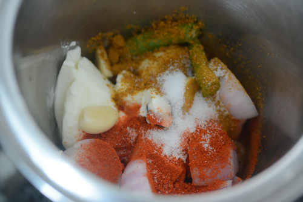
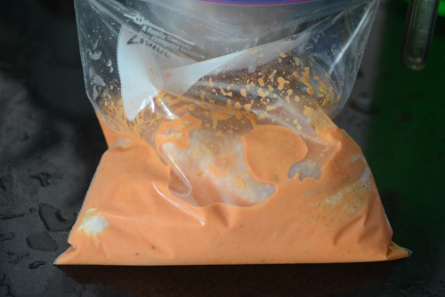
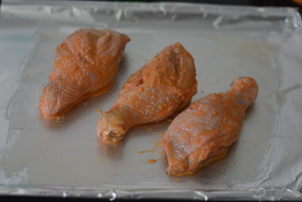
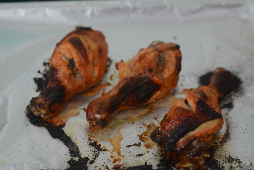

Tandoori Chicken
- 🍽️Servings: 2
- 🍝Total time: 8 hrs+15 min
- ⏱️Prep time: 8 hrs
- 🧑🏼🍳Cook time: 15 min
Ingredients
Prepare
- A large refrigerator box or ziplock bag for marination
- Aluminium foil for baking
- Green chutney, lime wedges, and raw onions for serving
For Marination
- 4 chicken leg pieces with skin on
- ¾ cup thick plain yogurt or curd
- ¼ cup cubed onion
- 1 clove of garlic (use 3-4 if the smaller Indian variety)
- A small piece of ginger
- 1 tbsp fresh lime juice
- ½ tsp Kashmiri chilli powder
- 1 green chilli (optional)
- 1 tsp garam masala
- A few drops of red food colour (optional)
- Salt to taste
Before Baking
To serve
- Lemon wedges
- Raw onion slices
- Green chutney
Directions
- It's best to marinate the chicken for 8 hours minimum or ideally overnight
- Clean the chicken legs and make deep slits into the flesh part making sure your knife touches bone each time and it's deep enough. This will ensure that the marinade will go deep into the chicken pieces
- In a blender, blend the ¾ cup yogurt, ¼ cup cubed onion, 1 clove of garlic, a small piece of ginger, ½ tsp chilli powder, 1 tbsp lime juice, 1 tsp garam masala, salt to taste, and a few drops of red food colour (if using), until it's a smooth paste

- Place the chicken pieces in a bowl or a ziplock bag and pour the marinade in
- Using your fingers, turn the chicken pieces in the marinade until well coated.
- Refrigerate for 8 hours or overnight

- Baking the chicken tandoori: When you are ready to bake the chicken, prepare the oven by pre-heating to 450F/230C. If your oven doesn't have this setting, just turn it to the maximum heat setting
- As your oven pre-heats, line a baking sheet with aluminium foil and grease with oil
- Take out your marinating chicken pieces and life out a piece of chicken, letting the marinade run back into the bowl or ziplock bag
- Place on the aluminium foil and repeat with the remaining pieces of chicken
- Lay it out so they pieces don't touch each other

- Make sure there is no excess marinade on the chicken or in the baking sheet because otherwise,the high temperatures we are using to bake the tandoori chicken will burn it
- It took me 15 minutes to get the dark, burnt, and patchy look on the chicken legs and they were done perfectly

- You can baste (spread) some of the marinade over the chicken midway through baking and put it back in the oven, I didn't bother with this step
- Serve with lemon wedges, green chutney, and raw onion slices